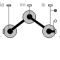

JointRRRPlanar revolute - revolute - revolute joint aggregation (no constraints, no potential states) |

|
Diagram
{kind=link}
Information
This information is part of the Modelica Standard Library maintained by the Modelica Association.
This component consists of 3 revolute joints with parallel axes of rotation that are connected together by two rods, see the default animation in the following figure (the axes vectors are not part of the default animation):

This joint aggregation introduces neither constraints nor state variables and should therefore be used in kinematic loops whenever possible to avoid non-linear systems of equations. It is only meaningful to use this component in planar loops. Basically, the position and orientation of the 3 revolute joints as well as of frame_ia, frame_ib, and frame_im are calculated by solving analytically a non-linear equation, given the position and orientation at frame_a and at frame_b.
Connector frame_a is the "left" side of the first revolute joint whereas frame_ia is the "right side of this revolute joint, fixed in rod 1. Connector frame_b is the "right" side of the third revolute joint whereas frame_ib is the "left" side of this revolute joint, fixed in rod 2. Finally, connector frame_im is the connector at the "right" side of the revolute joint in the middle, fixed in rod 2.
The easiest way to define the parameters of this joint is by moving the MultiBody system in a reference configuration where all frames of all components are parallel to each other (alternatively, at least frame_a, frame_ia, frame_im, frame_ib, frame_b of the JointRRR joint should be parallel to each other when defining an instance of this component).
Basically, the JointRRR model consists internally of a universal - spherical - revolute joint aggregation (= JointUSR). In a planar loop this will behave as if 3 revolute joints with parallel axes are connected by rigid rods.
Parameters (14)
| animation |
Value: true Type: Boolean Description: = true, if animation shall be enabled |
|---|---|
| n_a |
Value: {0, 0, 1} Type: Axis Description: Axes of revolute joints resolved in frame_a (all axes are parallel to each other) |
| n_b |
Value: Type: Real[3] Description: Axis of revolute joint fixed and resolved in frame_b |
| rRod1_ia |
Value: {1, 0, 0} Type: Position[3] (m) Description: Vector from origin of frame_a to revolute joint in the middle, resolved in frame_ia |
| rRod2_ib |
Value: {-1, 0, 0} Type: Position[3] (m) Description: Vector from origin of frame_ib to revolute joint in the middle, resolved in frame_ib |
| phi_offset |
Value: 0 Type: Angle_deg (°) Description: Relative angle offset of revolute joint at frame_b (angle = phi(t) + from_deg(phi_offset)) |
| phi_guess |
Value: 0 Type: Angle_deg (°) Description: Select the configuration such that at initial time |phi(t0) - from_deg(phi_guess)| is minimal |
| cylinderLength |
Value: world.defaultJointLength Type: Distance (m) Description: Length of cylinders representing the revolute joints |
| cylinderDiameter |
Value: world.defaultJointWidth Type: Distance (m) Description: Diameter of cylinders representing the revolute joints |
| rodDiameter |
Value: 1.1 * cylinderDiameter Type: Diameter (m) Description: Diameter of the two rods connecting the revolute joints |
| checkTotalPower |
Value: false Type: Boolean Description: = true, if total power flowing into this component shall be determined (must be zero) |
| e_a |
Value: Modelica.Math.Vectors.normalizeWithAssert(n_a) Type: Real[3] Description: Unit vector along axes of rotations, resolved in frame_a |
| e_ia |
Value: jointUSR.e2_ia Type: Real[3] Description: Unit vector along axes of rotations, resolved in frame_ia |
| e_b |
Value: jointUSR.revolute.e Type: Real[3] Description: Unit vector along axes of rotations, resolved in frame_b, frame_ib and frame_im |
Inputs (3)
| cylinderColor |
Default Value: Modelica.Mechanics.MultiBody.Types.Defaults.JointColor Type: Color Description: Color of cylinders representing the revolute joints |
|---|---|
| rodColor |
Default Value: Modelica.Mechanics.MultiBody.Types.Defaults.RodColor Type: Color Description: Color of the two rods connecting the revolute joint |
| specularCoefficient |
Default Value: world.defaultSpecularCoefficient Type: SpecularCoefficient Description: Reflection of ambient light (= 0: light is completely absorbed) |
Connectors (7)
| frame_a |
Type: Frame_a Description: Coordinate system fixed to the component with one cut-force and cut-torque |
|
|---|---|---|
| frame_b |
Type: Frame_b Description: Coordinate system fixed to the component with one cut-force and cut-torque |
|
| frame_ia |
Type: Frame_a Description: Coordinate system at origin of frame_a fixed at connecting rod of left and middle revolute joint |
|
| frame_ib |
Type: Frame_b Description: Coordinate system at origin of frame_b fixed at connecting rod of middle and right revolute joint |
|
| frame_im |
Type: Frame_b Description: Coordinate system at origin of revolute joint in the middle fixed at connecting rod of middle and right revolute joint |
|
| axis |
Type: Flange_a Description: 1-dim. rotational flange that drives the right revolute joint at frame_b |
|
| bearing |
Type: Flange_b Description: 1-dim. rotational flange of the drive bearing of the right revolute joint at frame_b |
Components (7)
Used in Examples (1)
|
Modelica.Mechanics.MultiBody.Examples.Loops Mechanism with three planar kinematic loops and one degree-of-freedom with analytic loop handling (with JointRRR joints) |